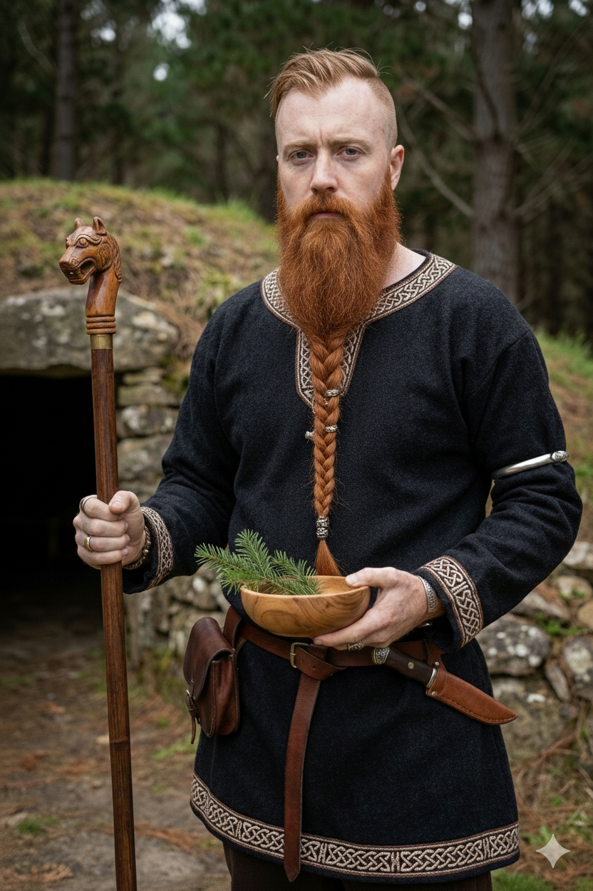

In the shadows of the southern peaks, where the salt of the Pacific meets the breath of the pine, the old ways endure. I am Hjortarvé Eikvarðr, Gothi of the Otago region.
My work is not merely an echo of the past, but a living practice—grounded in the historical integrity of Old Norse sources and the unwavering ethics of the ancestors. Here, we honor the High Ones, the Vaettir of this land, and the spirits of those who came before us.

Wisdom is the bridge between impulse and honor. Drawing from the stanzas of the Hávamál and the sagas of the North, I provide traditional guidance for those navigating the complexities of the modern world. We explore Frith, Örlög, and the virtues through the lens of the lore.
The threads of life are woven in the presence of the community and the Gods. I conduct Rites of Passage—including Namings, Handfastings, and Funeral Rites—with solemnity and historical fidelity, ensuring each transition is marked with silver-bright intent.
Ritual is the heartbeat of the tradition. Through the Blót, we hallow the seasons and maintain the cycle of gift-for-a-gift. In the Sumbel, we raise the horn to toast the Gods, the heroes, and our kin, weaving our words into the well of Wyrd beneath the forest boughs.
The door to the hall is open to those who seek with a sincere heart. Whether you require a ritual to hallow a new home, a ceremony to mark a milestone, or counsel beneath the boughs, reach out to discuss the path ahead.